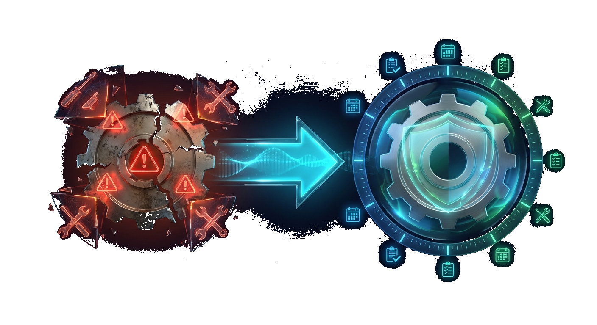
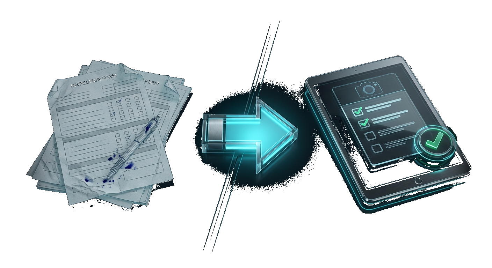
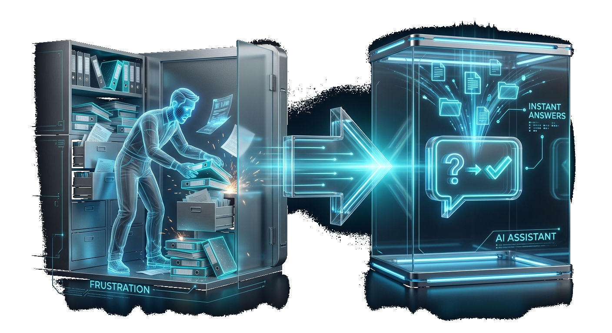
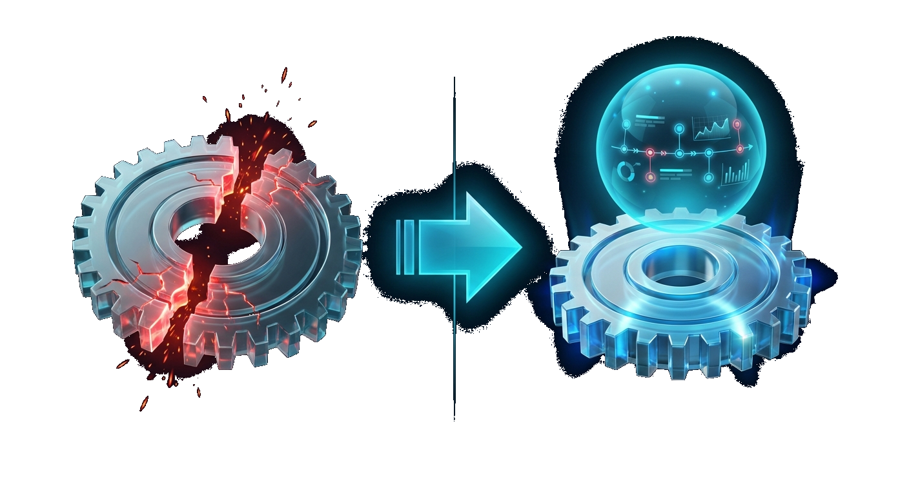
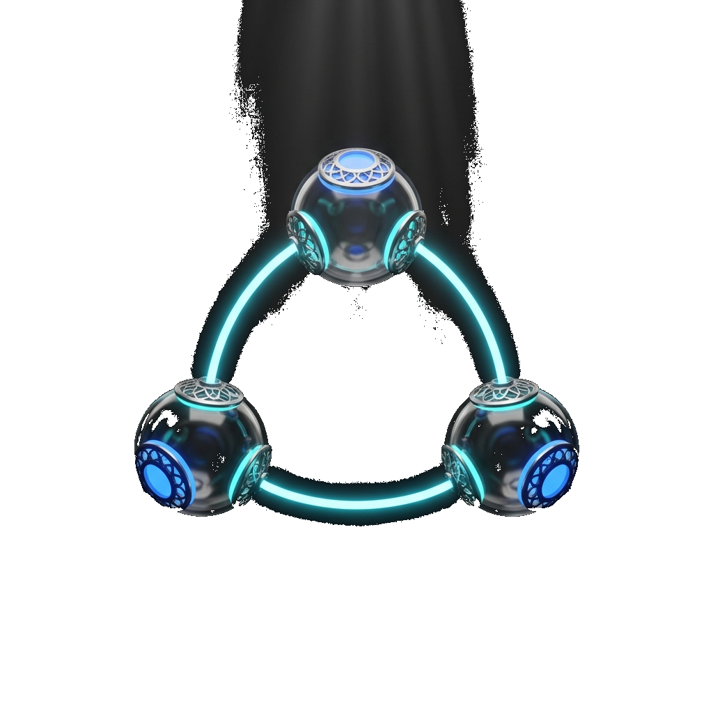

93% of Quebec's 14,000+ manufacturers are SMEs. We build the tools they've been missing.
Your business runs on Excel files. Everyone has their own version. Nobody has the right number.
Votre business roule sur des fichiers Excel. Tout le monde a sa propre version. Personne a le bon chiffre.
You're making decisions based on yesterday's data. Your floor managers are walking around with clipboards. Meanwhile, a machine has been running at 60% efficiency for 3 hours and nobody noticed.
Vous prenez des décisions basées sur les données d'hier. Vos contremaîtres se promènent avec des clipboards. Pendant ce temps, une machine roule à 60% depuis 3 heures et personne l'a remarqué.

Your maintenance is reactive. Something breaks, you scramble.
Votre maintenance est réactive. Quelque chose brise, vous courrez.

Paper inspection forms are slowing you down. Data entry errors, lost reports, clients asking for documentation you can't find fast enough.
Les formulaires d'inspection en papier vous ralentissent. Erreurs de saisie, rapports perdus, clients qui demandent de la documentation que vous trouvez pas assez vite.
You've stopped production because a $12 part wasn't in stock. Or worse — you're sitting on $200K of inventory that won't move for 6 months.
Vous avez déjà arrêté la production parce qu'une pièce de 12$ était pas en stock. Ou pire — vous avez 200K$ d'inventaire qui bougera pas pendant 6 mois.
Your planner is a hero — and that's the problem. Everything lives in their head (or a spreadsheet). When they're sick, the floor grinds. When a rush order comes in, it's chaos.
Votre planificateur est un héros — et c'est ça le problème. Tout vit dans sa tête (ou un Excel). Quand il est malade, le plancher bloque.
An auditor shows up tomorrow. Are you ready? Can you trace lot #4582 back to every raw material, every machine, every operator that touched it? In under 5 minutes?
Un auditeur arrive demain. Êtes-vous prêt? Pouvez-vous retracer le lot #4582 jusqu'à chaque matière première, chaque machine, chaque opérateur?
Your customers call your sales rep to ask about options. They email back and forth for a week. By the time the order is placed, everyone's frustrated and you've lost 3 other leads who didn't want to wait.
Vos clients appellent votre représentant pour connaître les options. Ils s'échangent des emails pendant une semaine. Le temps que la commande soit placée, tout le monde est frustré et vous avez perdu 3 autres leads qui voulaient pas attendre.
Unlike traditional firms, we integrate AI from day one. Predictive maintenance, automatic optimization, real-time insights — at no extra cost.
Contrairement aux firmes traditionnelles, on intègre l'IA dès le départ. Maintenance prédictive, optimisation automatique, insights en temps réel — sans surcoût.
Artificial intelligence isn't just for tech giants. We make it work for your reality.

Your team spends 2 hours a day searching for information. Digging through shared drives, emailing colleagues, flipping through binders. The answer exists — they just can't find it fast enough.
Votre équipe passe 2 heures par jour à chercher de l'information. Fouiller dans les drives partagés, envoyer des emails, feuilleter des cartables.
Your AP team processes 50 invoices a day by hand. Copy-paste from emails to the ERP. Match POs. Chase approvals. It's tedious, error-prone, and costs you real money in labor.
Votre équipe aux comptes payables traite 50 factures par jour à la main. Copy-paste des emails vers l'ERP. Matcher les bons de commande. Courir après les approbations.
You have 10 years of engineering drawings sitting in a filing cabinet. Inspection reports in PDF. Safety docs in Word. Technical specs in Excel. All valuable. All unsearchable.
Vous avez 10 ans de dessins d'ingénierie dans un classeur. Des rapports d'inspection en PDF. Des specs techniques en Excel. Tout précieux. Tout impossible à chercher.
Your field tech sits in the truck 30 min filling out forms. Details get lost. Report arrives late.
Votre tech passe 30 min dans le truck à remplir des formulaires.

That CNC machine just went down unexpectedly. Again. The repair takes 6 hours. The parts are on backorder. You missed a delivery deadline. The cost? $15,000 in lost production — for a bearing that costs $200.
Cette CNC vient de tomber en panne. Encore. La réparation prend 6 heures. Les pièces sont en commande spéciale. Coût? 15 000$ en production perdue — pour un bearing qui coûte 200$.
Your managers spend half their day on tasks a machine could do better. Compiling reports, monitoring KPIs, checking inventory levels, following up on overdue items.
Vos gestionnaires passent la moitié de leur journée sur des tâches qu'une machine ferait mieux. Compiler des rapports, surveiller des KPIs, vérifier les niveaux d'inventaire.
Every industry has unique challenges. Here's how PinnAI solves them.
You quote jobs in hours, track them in spreadsheets, and hope the delivery date holds.
Vous soumissionnez en heures, trackez dans des spreadsheets, et espérez que la date de livraison tienne.
One recall can cost you your business. And your current traceability is a stack of paper logs.
Un rappel peut vous coûter votre entreprise. Et votre traçabilité actuelle c'est une pile de logs papier.
Your project updates are a weekly email from the site foreman. Your clients want real-time visibility. Your PMs are drowning in admin.
Vos mises à jour de projets c'est un email hebdomadaire du contremaître. Vos clients veulent de la visibilité en temps réel. Vos chargés de projet sont noyés dans l'admin.
You're shipping 500 orders a day and still using paper pick lists. Your warehouse team is fast — but they could be 3x faster with the right tools.
Vous shippez 500 commandes par jour avec des listes de cueillette en papier. Votre équipe d'entrepôt est rapide — mais pourrait être 3x plus rapide.
Your consultants are billing $200/hour but spending 20% of their time on timesheets, reports, and admin. That's $40/hour of value walking out the door.
Vos consultants facturent 200$/heure mais passent 20% de leur temps sur les timesheets, rapports et admin. C'est 40$/heure de valeur qui sort par la porte.

ERP & IntegrationWe integrate with your existing systems — ERP, CRM, databases, APIs.
Your ERP can do everything — but nobody knows how. Complex operations require 15 clicks, 3 screens, and a training manual. Your team uses 20% of the features because the rest is too complicated.
Votre ERP peut tout faire — mais personne sait comment. Les opérations complexes demandent 15 clics, 3 écrans et un manuel de formation. Votre équipe utilise 20% des fonctionnalités parce que le reste est trop compliqué.
You've outgrown QuickBooks but SAP would bankrupt you.
Vous avez dépassé QuickBooks mais SAP vous mettrait en faillite.
Your server is in a closet and your IT guy is worried.
Votre serveur est dans un placard et votre gars de TI est inquiet.
Your ERP doesn't talk to your CRM. Your CRM doesn't talk to your website. Your team copy-pastes between 4 systems.
Votre ERP parle pas à votre CRM. Votre CRM parle pas à votre site web. Votre équipe fait du copy-paste entre 4 systèmes.
You have data everywhere but insights nowhere.
Vous avez des données partout mais des insights nulle part.
Tell us your challenge. We'll show you how to solve it.
Parlez-nous de votre défi. On vous montre comment le résoudre.
With Benoit and Jérémy — not a salesperson.
Avec Benoit et Jérémy — pas un vendeur.
No commitment. No slides. Just a real conversation about your operation.
Pas d'engagement. Pas de slides. Juste une vraie conversation sur votre opération.